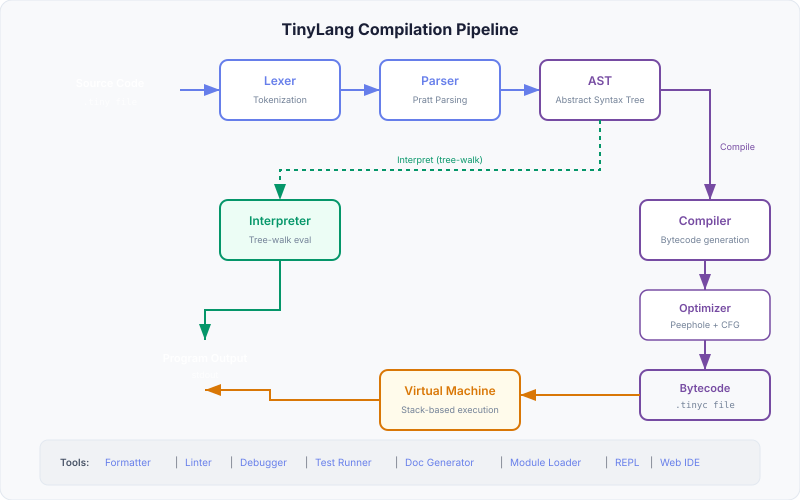

Architecture
TinyLang is a complete language implementation featuring both a tree-walk interpreter and a bytecode compiler with virtual machine. This guide explains how each component works together.
Compilation Pipeline

TinyLang supports two execution paths:
- Interpreter path: Source → Lexer → Parser → AST → Tree-walk Interpreter → Output
- Compiler path: Source → Lexer → Parser → AST → Compiler → Optimizer → Bytecode → VM → Output
Lexer (Tokenizer)
The lexer (src/lexer/) converts raw source text into a stream of tokens. It handles:
- Keywords:
let,const,fn,class,if,else,while,for,in,return,match,when,import,from,new,this,extends,test,break,continue,and,or,not,true,false,null - Literals: Numbers (integers, floats), strings (single/double quoted)
- Operators:
+,-,*,/,%,**,==,!=,<,>,<=,>=,=,+=,-=,*=,/=,=>,.. - Delimiters:
(,),{,},[,],,,.,:,; - Comments: Single-line (
//)
Each token carries its source position (line and column), enabling precise error messages:
// Token structure
{
type: TokenType, // e.g. "NUMBER", "IDENTIFIER", "KEYWORD"
value: string, // raw text: "42", "let", "hello"
line: number, // 1-based line number
column: number // 1-based column number
}Parser (Pratt Parsing)
The parser (src/parser/) uses a Pratt parser (top-down operator precedence) to convert tokens into an Abstract Syntax Tree (AST). This approach elegantly handles:
- Operator precedence:
2 + 3 * 4correctly parses as2 + (3 * 4) - Associativity:
a = b = cassociates right-to-left - Prefix operators:
-x,not y - Postfix/infix: Function calls, index access, property access
- Mixed expressions:
obj.method(args)[0]
Operator Precedence (low to high)
| Level | Operators | Associativity |
|---|---|---|
| 1 | =, +=, -=, *=, /= | Right |
| 2 | or | Left |
| 3 | and | Left |
| 4 | ==, != | Left |
| 5 | <, >, <=, >= | Left |
| 6 | .. (range) | Left |
| 7 | +, - | Left |
| 8 | *, /, % | Left |
| 9 | ** | Right |
| 10 | not, - (unary) | Prefix |
| 11 | ., [], () | Left |
AST Node Types
The AST (src/types/ast.ts) represents every syntactic construct:
// Example AST for: let x = 2 + 3
{
type: "VariableDeclaration",
name: "x",
mutable: true,
initializer: {
type: "BinaryExpression",
operator: "+",
left: { type: "NumberLiteral", value: 2 },
right: { type: "NumberLiteral", value: 3 }
}
}Tree-Walk Interpreter
The interpreter (src/interpreter/) recursively visits each AST node and evaluates it directly. It uses an Environment class with parent chain for lexical scoping:
// Environment chain for closure support
class Environment {
values: Map<string, RuntimeValue>
parent: Environment | null
get(name) // Look up variable, walk parent chain
set(name, v) // Set variable in current scope
define(name) // Create new binding in current scope
}Runtime Values
Values in the interpreter are represented as discriminated unions (src/types/values.ts):
| Type Tag | Value Field |
|---|---|
number | value: number |
string | value: string |
boolean | value: boolean |
null | (no value field) |
array | elements: RuntimeValue[] |
object | properties: Map<string, RuntimeValue> |
function | params, body, closure (Environment) |
native-function | fn: (args) => RuntimeValue |
class | name, methods, superClass |
instance | class, properties |
Bytecode Compiler
The compiler (src/compiler/compiler.ts) translates AST nodes into a linear sequence of bytecode instructions stored in a Chunk.
Chunk Structure
// A compiled bytecode chunk
{
code: Uint8Array, // Bytecode instructions
constants: RuntimeValue[], // Constant pool
lines: number[] // Source line mapping
}Opcode Reference
TinyLang uses 44 bytecode instructions organized into categories:
Stack Operations
| Opcode | Hex | Description |
|---|---|---|
CONST | 0x01 | Push a constant from the constant pool |
POP | 0x02 | Pop the top of stack |
DUP | 0x03 | Duplicate the top of stack |
Arithmetic Operations
| Opcode | Hex | Description |
|---|---|---|
ADD | 0x10 | Pop two values, push their sum |
SUB | 0x11 | Subtraction |
MUL | 0x12 | Multiplication |
DIV | 0x13 | Division |
MOD | 0x14 | Modulo |
POW | 0x15 | Exponentiation |
NEGATE | 0x16 | Unary negation |
Comparison Operations
| Opcode | Hex | Description |
|---|---|---|
EQ | 0x20 | Equal |
NEQ | 0x21 | Not equal |
LT | 0x22 | Less than |
LTE | 0x23 | Less than or equal |
GT | 0x24 | Greater than |
GTE | 0x25 | Greater than or equal |
Logical Operations
| Opcode | Hex | Description |
|---|---|---|
NOT | 0x30 | Logical NOT |
AND | 0x31 | Logical AND |
OR | 0x32 | Logical OR |
Control Flow
| Opcode | Hex | Description |
|---|---|---|
JMP | 0x40 | Unconditional jump |
JMP_IF_FALSE | 0x41 | Jump if top of stack is falsy |
JMP_IF_TRUE | 0x42 | Jump if top of stack is truthy |
LOOP | 0x43 | Jump backwards (loop back) |
Variable Access
| Opcode | Hex | Description |
|---|---|---|
LOAD_LOCAL | 0x50 | Push local variable onto stack |
STORE_LOCAL | 0x51 | Store top of stack in local |
LOAD_GLOBAL | 0x52 | Push global variable onto stack |
STORE_GLOBAL | 0x53 | Store top of stack in global |
LOAD_UPVALUE | 0x54 | Load captured closure variable |
STORE_UPVALUE | 0x55 | Store into captured closure variable |
Functions
| Opcode | Hex | Description |
|---|---|---|
CALL | 0x60 | Call function with N arguments |
RETURN | 0x61 | Return from function |
CLOSURE | 0x62 | Create closure capturing upvalues |
Data Structures
| Opcode | Hex | Description |
|---|---|---|
ARRAY | 0x70 | Create array from N stack elements |
OBJECT | 0x71 | Create object from key-value pairs |
INDEX | 0x72 | Read value at index/key |
SET_INDEX | 0x73 | Set value at index/key |
GET_PROP | 0x74 | Get object property |
SET_PROP | 0x75 | Set object property |
Object-Oriented Programming
| Opcode | Hex | Description |
|---|---|---|
CLASS | 0x80 | Define a class |
METHOD | 0x81 | Define a method on a class |
INHERIT | 0x82 | Set up inheritance |
NEW_INSTANCE | 0x83 | Create new class instance |
GET_THIS | 0x84 | Push this reference onto stack |
I/O and Control
| Opcode | Hex | Description |
|---|---|---|
PRINT | 0x90 | Print top of stack |
HALT | 0xFF | Stop execution |
Optimizer
The optimizer runs peephole optimizations on the bytecode before execution:
- Constant folding:
CONST 2; CONST 3; ADD→CONST 5 - Dead code elimination: Removes unreachable instructions after unconditional jumps
- Redundant pop removal: Eliminates push-then-pop sequences
- Jump threading: Collapses chains of jumps to their final target
Virtual Machine (VM)
The VM (src/vm/vm.ts) is a stack-based virtual machine that executes compiled bytecode:
VM Components
- Value Stack: Holds operands and intermediate results
- Call Frame Stack: Tracks function calls (return address, local variables offset)
- Instruction Pointer (IP): Points to the next instruction to execute
- Globals Table: Stores global variables (including stdlib functions)
Execution Example
// Source: print(2 + 3 * 4)
// Compiles to:
CONST 2 // Push 2 Stack: [2]
CONST 3 // Push 3 Stack: [2, 3]
CONST 4 // Push 4 Stack: [2, 3, 4]
MUL // 3 * 4 = 12 Stack: [2, 12]
ADD // 2 + 12 = 14 Stack: [14]
PRINT // Output: 14 Stack: []
HALT // StopClosure Implementation
Closures are implemented using upvalues. When a function captures a variable from an outer scope, the compiler generates LOAD_UPVALUE/STORE_UPVALUE instructions. The VM maintains upvalue references that can outlive their original stack frame.
Debugger
The debugger (src/debugger/) provides step-through execution with:
- Breakpoints: Set at specific source lines, with optional conditions
- Step/Step-into/Step-out: Fine-grained execution control
- Variable inspection: View local variables at any point
- Expression evaluation: Evaluate expressions in the current context
- Source display: Shows current position in source code
Supporting Tools
Formatter
The formatter (src/formatter/) parses source code and re-emits it with consistent style. It handles indentation, spacing, line breaks, and trailing newlines based on configurable rules.
Linter
The linter (src/linter/) performs static analysis by walking the AST and checking for common issues:
prefer-const- Variables that could be constno-unused-variables- Declared but never referenced variablesno-empty-blocks- Empty function/loop bodiesunreachable-code- Code after return/breakno-shadow- Variable shadowing in nested scopes
Test Runner
The test runner (src/testing/) executes test blocks and reports results. It provides assertion functions like expectToBe and tracks pass/fail status.
Module Loader
The module loader (src/modules/) resolves import paths, reads module files, parses them, and makes exported bindings available to the importing module.
Project Structure
src/
lexer/ - Tokenization
parser/ - Pratt parser, AST construction
interpreter/ - Tree-walk evaluation
compiler/ - Bytecode compilation & optimization
vm/ - Stack-based virtual machine
debugger/ - Interactive debugger
formatter/ - Code formatter
linter/ - Static analysis
testing/ - Test runner
modules/ - Module system & loader
stdlib/ - Standard library (60+ functions)
repl/ - Interactive REPL
cli/ - Command-line interface
types/ - AST nodes, tokens, runtime values
tests/ - Mirrors src/ structure
examples/ - 10 example programs
playground/ - Web IDE (CodeMirror + bundled TinyLang)
docs/ - Documentation site